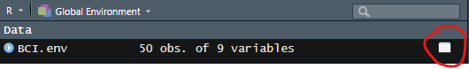
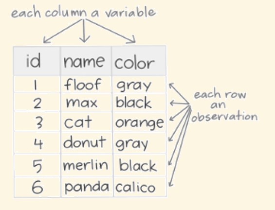
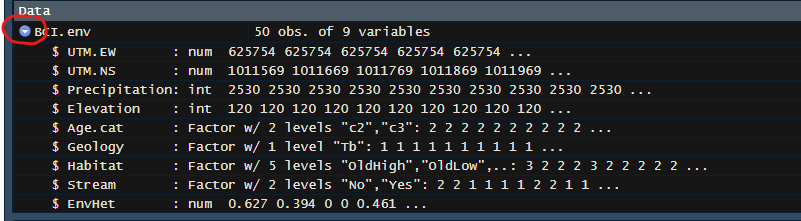

Cirad - UnB
2025-04-12
A 50-ha long-term forest monitoring plot established in 1980
We will work with data on the environment of the 50 1-ha plots.
These data are available within the package vegan.
You should have already installed the package, let’s load it:
Loading required package: permuteLoading required package: latticeThis is vegan 2.6-8We use the commanddata to open the data:
We can now see the data in the Environment. What does it say?
Let’s see what is BCI.env
UTM.EW UTM.NS Precipitation Elevation Age.cat Geology Habitat Stream
1 625754 1011569 2530 120 c3 Tb OldSlope Yes
2 625754 1011669 2530 120 c3 Tb OldLow Yes
3 625754 1011769 2530 120 c3 Tb OldLow No
4 625754 1011869 2530 120 c3 Tb OldLow No
5 625754 1011969 2530 120 c3 Tb OldSlope No
6 625854 1011569 2530 120 c3 Tb OldLow No
7 625854 1011669 2530 120 c3 Tb OldLow Yes
8 625854 1011769 2530 120 c3 Tb OldLow Yes
9 625854 1011869 2530 120 c3 Tb OldLow No
10 625854 1011969 2530 120 c3 Tb OldLow No
11 625954 1011569 2530 120 c3 Tb OldLow No
12 625954 1011669 2530 120 c3 Tb OldLow No
13 625954 1011769 2530 120 c3 Tb OldLow Yes
14 625954 1011869 2530 120 c3 Tb OldLow No
15 625954 1011969 2530 120 c3 Tb OldLow No
16 626054 1011569 2530 120 c3 Tb OldSlope No
17 626054 1011669 2530 120 c3 Tb OldLow No
18 626054 1011769 2530 120 c3 Tb Swamp No
19 626054 1011869 2530 120 c3 Tb OldLow No
20 626054 1011969 2530 120 c3 Tb OldLow No
21 626154 1011569 2530 120 c3 Tb OldSlope No
22 626154 1011669 2530 120 c3 Tb OldLow No
23 626154 1011769 2530 120 c3 Tb Swamp No
24 626154 1011869 2530 120 c3 Tb OldLow No
25 626154 1011969 2530 120 c3 Tb OldLow No
26 626254 1011569 2530 120 c3 Tb OldSlope No
27 626254 1011669 2530 120 c3 Tb OldLow No
28 626254 1011769 2530 120 c3 Tb OldLow No
29 626254 1011869 2530 120 c3 Tb OldHigh No
30 626254 1011969 2530 120 c3 Tb Young No
31 626354 1011569 2530 120 c3 Tb OldLow No
32 626354 1011669 2530 120 c3 Tb OldHigh No
33 626354 1011769 2530 120 c2 Tb OldHigh No
34 626354 1011869 2530 120 c3 Tb OldHigh No
35 626354 1011969 2530 120 c3 Tb Young No
36 626454 1011569 2530 120 c3 Tb OldSlope No
37 626454 1011669 2530 120 c3 Tb OldHigh No
38 626454 1011769 2530 120 c3 Tb OldHigh No
39 626454 1011869 2530 120 c3 Tb OldHigh No
40 626454 1011969 2530 120 c3 Tb OldHigh No
41 626554 1011569 2530 120 c3 Tb OldSlope No
42 626554 1011669 2530 120 c3 Tb OldSlope No
43 626554 1011769 2530 120 c3 Tb OldSlope No
44 626554 1011869 2530 120 c3 Tb OldSlope No
45 626554 1011969 2530 120 c3 Tb OldSlope Yes
46 626654 1011569 2530 120 c3 Tb OldLow No
47 626654 1011669 2530 120 c3 Tb OldLow No
48 626654 1011769 2530 120 c3 Tb OldLow No
49 626654 1011869 2530 120 c3 Tb OldLow No
50 626654 1011969 2530 120 c3 Tb OldSlope Yes
EnvHet
1 0.6272
2 0.3936
3 0.0000
4 0.0000
5 0.4608
6 0.0768
7 0.3808
8 0.2112
9 0.0000
10 0.0000
11 0.4032
12 0.0000
13 0.6624
14 0.1472
15 0.0000
16 0.4608
17 0.0000
18 0.6592
19 0.0768
20 0.2112
21 0.2688
22 0.2112
23 0.6240
24 0.4352
25 0.6080
26 0.3648
27 0.0000
28 0.3328
29 0.6528
30 0.6144
31 0.4928
32 0.7264
33 0.0768
34 0.0000
35 0.3328
36 0.4032
37 0.3648
38 0.0000
39 0.0000
40 0.6208
41 0.4032
42 0.1472
43 0.0768
44 0.5568
45 0.3424
46 0.1472
47 0.3648
48 0.4608
49 0.4992
50 0.6368BCI.env contains environmental variables in columns, and observations (here each 50 1-ha plot) in rows.
Displaying the data set in the console is not very helpful…
We can display it in a separate tab using the function View
or to click on the table icon in the environment: 
BCI.env is a data frame:
[1] TRUEA data frame is a type of R object that contains data with observations in row and variables in columns.

The data frame is the structure the most commonly used by scientists.
To know the dimension of the data frame, we can use the functions nrow and ncol:
[1] 50BCI.env contains 50 observations and 9 variables, as indicated in the environment.
We can also use the functiondim to get both dimention (1st the number of rows, second the number of columns).
The function names gives the columns names, which are the names of the variables.
[1] "UTM.EW" "UTM.NS" "Precipitation" "Elevation"
[5] "Age.cat" "Geology" "Habitat" "Stream"
[9] "EnvHet" To know more about these variables, we can look at the help:
The function structure give a more detail overview of a data frame:
'data.frame': 50 obs. of 9 variables:
$ UTM.EW : num 625754 625754 625754 625754 625754 ...
$ UTM.NS : num 1011569 1011669 1011769 1011869 1011969 ...
$ Precipitation: int 2530 2530 2530 2530 2530 2530 2530 2530 2530 2530 ...
$ Elevation : int 120 120 120 120 120 120 120 120 120 120 ...
$ Age.cat : Factor w/ 2 levels "c2","c3": 2 2 2 2 2 2 2 2 2 2 ...
$ Geology : Factor w/ 1 level "Tb": 1 1 1 1 1 1 1 1 1 1 ...
$ Habitat : Factor w/ 5 levels "OldHigh","OldLow",..: 3 2 2 2 3 2 2 2 2 2 ...
$ Stream : Factor w/ 2 levels "No","Yes": 2 2 1 1 1 1 2 2 1 1 ...
$ EnvHet : num 0.627 0.394 0 0 0.461 ...This gives the dimensions of the data frame, and the name and classe of each variable.
NB: Variables can be of different classes.
We can also access the structure by clicking on the blue arrow in the environment:
Each variable (each column) of a data frame is a vector.
We can access the variables using $
[1] 2530 2530 2530 2530 2530 2530 2530 2530 2530 2530 2530 2530 2530 2530 2530
[16] 2530 2530 2530 2530 2530 2530 2530 2530 2530 2530 2530 2530 2530 2530 2530
[31] 2530 2530 2530 2530 2530 2530 2530 2530 2530 2530 2530 2530 2530 2530 2530
[46] 2530 2530 2530 2530 2530To see only the first or last values, we use the functionshead or tail. We can specify the number of observations to show in the second argument:
We can access the content of a data frame using []
A variable (column):
[1] 120 120 120 120 120 120 120 120 120 120 120 120 120 120 120 120 120 120 120
[20] 120 120 120 120 120 120 120 120 120 120 120 120 120 120 120 120 120 120 120
[39] 120 120 120 120 120 120 120 120 120 120 120 120An observation (row):
UTM.EW UTM.NS Precipitation Elevation Age.cat Geology Habitat Stream EnvHet
5 625754 1011969 2530 120 c3 Tb OldSlope No 0.4608or a value (row and column):
Since the variables have a name, we can also access them by name:
[1] 120We can access several observations and/or several variables at the same time:
Precipitation Elevation
5 2530 120
6 2530 120
7 2530 120
8 2530 1205:8 means from 5 to 8
We can also use $ to create a new variable to a data frame. Let’s add the site (BCI):
The functionrep allows to repeat the same value (here “BCI”) a certain number of times (here 50).
NB: the dimensions and structure of the data frame have changed:
We can check the new structure of the data frame:
'data.frame': 50 obs. of 10 variables:
$ UTM.EW : num 625754 625754 625754 625754 625754 ...
$ UTM.NS : num 1011569 1011669 1011769 1011869 1011969 ...
$ Precipitation: int 2530 2530 2530 2530 2530 2530 2530 2530 2530 2530 ...
$ Elevation : int 120 120 120 120 120 120 120 120 120 120 ...
$ Age.cat : Factor w/ 2 levels "c2","c3": 2 2 2 2 2 2 2 2 2 2 ...
$ Geology : Factor w/ 1 level "Tb": 1 1 1 1 1 1 1 1 1 1 ...
$ Habitat : Factor w/ 5 levels "OldHigh","OldLow",..: 3 2 2 2 3 2 2 2 2 2 ...
$ Stream : Factor w/ 2 levels "No","Yes": 2 2 1 1 1 1 2 2 1 1 ...
$ EnvHet : num 0.627 0.394 0 0 0.461 ...
$ Site : chr "BCI" "BCI" "BCI" "BCI" ...We can transform the variable site to a factor using the functionas.factor
We can also add a variable by doing an operation on an existing variable. Let’s add the precipitations in meters:
Let’s check the new structure:
'data.frame': 50 obs. of 11 variables:
$ UTM.EW : num 625754 625754 625754 625754 625754 ...
$ UTM.NS : num 1011569 1011669 1011769 1011869 1011969 ...
$ Precipitation: int 2530 2530 2530 2530 2530 2530 2530 2530 2530 2530 ...
$ Elevation : int 120 120 120 120 120 120 120 120 120 120 ...
$ Age.cat : Factor w/ 2 levels "c2","c3": 2 2 2 2 2 2 2 2 2 2 ...
$ Geology : Factor w/ 1 level "Tb": 1 1 1 1 1 1 1 1 1 1 ...
$ Habitat : Factor w/ 5 levels "OldHigh","OldLow",..: 3 2 2 2 3 2 2 2 2 2 ...
$ Stream : Factor w/ 2 levels "No","Yes": 2 2 1 1 1 1 2 2 1 1 ...
$ EnvHet : num 0.627 0.394 0 0 0.461 ...
$ Site : Factor w/ 1 level "BCI": 1 1 1 1 1 1 1 1 1 1 ...
$ Precip_m : num 2.53 2.53 2.53 2.53 2.53 2.53 2.53 2.53 2.53 2.53 ...Which are the quantitative variables in our data set?
'data.frame': 50 obs. of 11 variables:
$ UTM.EW : num 625754 625754 625754 625754 625754 ...
$ UTM.NS : num 1011569 1011669 1011769 1011869 1011969 ...
$ Precipitation: int 2530 2530 2530 2530 2530 2530 2530 2530 2530 2530 ...
$ Elevation : int 120 120 120 120 120 120 120 120 120 120 ...
$ Age.cat : Factor w/ 2 levels "c2","c3": 2 2 2 2 2 2 2 2 2 2 ...
$ Geology : Factor w/ 1 level "Tb": 1 1 1 1 1 1 1 1 1 1 ...
$ Habitat : Factor w/ 5 levels "OldHigh","OldLow",..: 3 2 2 2 3 2 2 2 2 2 ...
$ Stream : Factor w/ 2 levels "No","Yes": 2 2 1 1 1 1 2 2 1 1 ...
$ EnvHet : num 0.627 0.394 0 0 0.461 ...
$ Site : Factor w/ 1 level "BCI": 1 1 1 1 1 1 1 1 1 1 ...
$ Precip_m : num 2.53 2.53 2.53 2.53 2.53 2.53 2.53 2.53 2.53 2.53 ...UTM.EW, UTM.NS, Precipitation, Elevation, EnvHet (and Precip_m)
Let’s consider the environmental heterogeneity (see the help to know how it was calculated).
We can use the functions min, max and range to explore the extreme values of the variable:
[1] 0We already know how to get the mean:
[1] 0.31072We can get the median using the functionmedian
🤔 Do you remember what is the median?
It is the middle value: half of the values are lower than the median and half are higher.
The simpler one is the extent of the distribution:
[1] 0.7264We can also get the variance and the standard deviation (which is the square root of the variance), using the functionsvar and sd
The higher the variance (and the standard deviation) the more dispersed the values are around the mean.
We can also look at the quantiles.
🤔 What is a quantile?
A quantile is a value that divides a vector into equal-size groups, to understand the distribution of the data
For example, we can look at the quartiles that divides the distribution in 4.
prob indicate which quantile we want
But we can also consider other quartiles, for example the percentiles (dividing the vector in 100).
95% of the values are between the percentile 2.5 and the percentile 97.5:
2.5% 97.5%
0.00000 0.66168 The function summary gives several indicators in one go:
Min. 1st Qu. Median Mean 3rd Qu. Max.
0.0000 0.0768 0.3536 0.3107 0.4848 0.7264 Which are the qualitative variables in our data set?
'data.frame': 50 obs. of 11 variables:
$ UTM.EW : num 625754 625754 625754 625754 625754 ...
$ UTM.NS : num 1011569 1011669 1011769 1011869 1011969 ...
$ Precipitation: int 2530 2530 2530 2530 2530 2530 2530 2530 2530 2530 ...
$ Elevation : int 120 120 120 120 120 120 120 120 120 120 ...
$ Age.cat : Factor w/ 2 levels "c2","c3": 2 2 2 2 2 2 2 2 2 2 ...
$ Geology : Factor w/ 1 level "Tb": 1 1 1 1 1 1 1 1 1 1 ...
$ Habitat : Factor w/ 5 levels "OldHigh","OldLow",..: 3 2 2 2 3 2 2 2 2 2 ...
$ Stream : Factor w/ 2 levels "No","Yes": 2 2 1 1 1 1 2 2 1 1 ...
$ EnvHet : num 0.627 0.394 0 0 0.461 ...
$ Site : Factor w/ 1 level "BCI": 1 1 1 1 1 1 1 1 1 1 ...
$ Precip_m : num 2.53 2.53 2.53 2.53 2.53 2.53 2.53 2.53 2.53 2.53 ...Age.cat, Geology, Habitat, Stream (and Site)
Let’s consider the variable habitat:
We can use the function table to count the number of occurrences in each category (each levels of the factor);
OldHigh OldLow OldSlope Swamp Young
8 26 12 2 2 ⚠️ By default, we don’t see the missing values (NA). To get them, we need to use the argument useNA:
We can also use the function freq from the package questionr:
n % val%
OldLow 26 52 52
OldSlope 12 24 24
OldHigh 8 16 16
Swamp 2 4 4
Young 2 4 4
Total 50 100 100💡 using the name of the package before the name of the function with :: (here questionr::freq) allows not to load the whole package
n is the number of observations per category
% is the percentage
val% is the percentage calculated on valid values (excluding NA)
We have already used the function summary on a vector. We can also use it on a whole data frame:
UTM.EW UTM.NS Precipitation Elevation Age.cat
Min. :625754 Min. :1011569 Min. :2530 Min. :120 c2: 1
1st Qu.:625954 1st Qu.:1011669 1st Qu.:2530 1st Qu.:120 c3:49
Median :626204 Median :1011769 Median :2530 Median :120
Mean :626204 Mean :1011769 Mean :2530 Mean :120
3rd Qu.:626454 3rd Qu.:1011869 3rd Qu.:2530 3rd Qu.:120
Max. :626654 Max. :1011969 Max. :2530 Max. :120
Geology Habitat Stream EnvHet Site Precip_m
Tb:50 OldHigh : 8 No :43 Min. :0.0000 BCI:50 Min. :2.53
OldLow :26 Yes: 7 1st Qu.:0.0768 1st Qu.:2.53
OldSlope:12 Median :0.3536 Median :2.53
Swamp : 2 Mean :0.3107 Mean :2.53
Young : 2 3rd Qu.:0.4848 3rd Qu.:2.53
Max. :0.7264 Max. :2.53 We get the summary statistics for quantitative variables, and the number of observations per categories for categorical ones.
Some packages propose functions to create automatic reports to explore a data frame.
See result here
See result here
We can create a data frame using the function data.frame:
To do this, we enter each variable as a vector.
Let’s visualise it:
'data.frame': 4 obs. of 4 variables:
$ Site : chr "Site1" "Site2" "Site3" "Site4"
$ Temp : num 25.8 29.3 32 31.3
$ Precip: num 1423 1532 1489 1567
$ Veget : chr "Savana" "Forest" "Savana" "Savana"We can then transform some variables to factors if relevant:
We can check the structure again:
You can use Excel, Google Sheets, LibreOffice Calc…
One dataset (one table) per spreadsheet
Give clear headers (column names)
No empty row or column
No merged cells
Leave empty cells for missing values (or write “NA”)
Avoid special characters
Use . for the decimal separator
Use YYYY-MM–DD for date (handling dates in Excel is 😭🤬)
Export as a CSV (Comma-Separated Values), which uses comma , as delimiter of column
https://biodiversitydata.github.io/chapters/data-acquisition.html using download.file()
There is a package called rgbif https://biodiversitydata.github.io/chapters/data-cleaning.html
https://www.britishecologicalsociety.org//wp-content/uploads/2024/12/BES-Data-management-guide.pdf
FAIR (Findable, Accessible, Interoperable and Reusable data principles; https://force11.org/info/the-fair-data-principles/
https://biodiversitydata.github.io/chapters/introduction.html Cours Gaëlle guide BES
sharing of data products, code, and metadata
Cours Juba
To go further on data management
https://www.britishecologicalsociety.org//wp-content/uploads/2024/12/BES-Data-management-guide.pdf